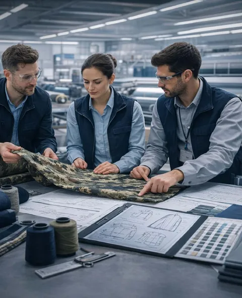

Teknik tekstilÜretim kontrolüLaboratuvar
Teknik tekstilde gücün adı: Antra Tech
30 yılı aşkın tecrübemizle üretim süreçlerinizi en yüksek kalite standartlarında yönetiyoruz.
01Hoş geldiniz
Teknik tekstil ve üretim kontrolünde güvenilir çözüm ortağınız

Antra Tech, tekstil sektöründe 30 yılı aşkın tecrübesiyle, özellikle teknik tekstil ve üretim kontrol süreçleri alanında uzmanlaşmış bir mühendislik ve üretim destek firmasıdır.
Türkiye ve Türki Cumhuriyetlerde edindiği güçlü bilgi birikimi ile faaliyet gösteren firmamız, yüksek standartlı üretim süreçlerinin planlanması, uygulanması ve denetlenmesi konularında öncü bir rol üstlenmektedir.
Antra Tech, üretimin her aşamasında mühendislik yaklaşımı, laboratuvar testleri ve saha denetimleri ile kaliteyi garanti altına alır. Entegre tesislerde yürütülen süreçlerde, müşterilerimizin ihtiyaçlarına özel çözümler geliştirerek güvenilir, sürdürülebilir ve yüksek performanslı üretim sistemleri oluşturur.
Tekstil üretim süreçlerinde aktif görev aldığımız kurumlar
- Kara Kuvvetleri Komutanlığı01
- Deniz Kuvvetleri Komutanlığı02
- Hava Kuvvetleri Komutanlığı03
- Jandarma Asayiş birimleri04
- Tarım ve Orman BakanlığıKumaş üretimi · mühendislik ve kalite kontrol05
Faaliyet coğrafyası
Faaliyet gösterdiğimiz ülkeler ve Çorlu'dan başkentlere kuş uçuşu mesafeler.
02Hizmetlerimiz
Üretim kontrolünden teknik danışmanlığa
Savunma sanayi başta olmak üzere, kamu kurumları ve özel sektör projelerinde; üretim kontrol, laboratuvar testleri ve saha denetimleri ile süreçlerin her aşamasında aktif rol alıyoruz.
Savunma ve kalite güvencesi
Kritik kurumların üretimini ölçen, denetleyen ve güvenceye alan hizmetler.
Mühendislik ve uygulama
Süreci kuran, danışmanlık veren ve tekstili kullanım alanına uyarlayan hizmetler.
Savunma sanayi için üretilen tekstil ürünleri, yüksek dayanıklılık, güvenlik ve performans gerektiren özel ürünlerdir. Antra Tech olarak, bu alanda edindiğimiz deneyim ile kuvvet komutanlıklarının ihtiyaçlarına uygun üretim ve kontrol hizmetleri sunmaktayız.
Askeri kıyafetler, koruyucu tekstiller ve özel kullanım alanlarına yönelik ürünlerde, üretim süreçlerini titizlikle yönetiyor ve kalite standartlarını en üst seviyede tutuyoruz. Bu süreçte hem mühendislik desteği sağlıyor hem de saha kontrolleri ile üretimin her aşamasını güvence altına alıyoruz.
Yerli ve milli üretim vizyonu doğrultusunda, savunma tekstillerinde dışa bağımlılığı azaltacak projeler geliştirmeye devam ediyoruz.
Antra Tech, üretim süreçlerinin tamamını kapsayan entegre bir yönetim anlayışı ile hizmet sunmaktadır. Entegre tesislerde gerçekleştirilen üretim faaliyetleri sırasında, tüm aşamalar saha kontrol ekiplerimiz tarafından sürekli denetlenmektedir.
Planlama, üretim, kalite kontrol ve sevkiyat süreçlerinin tamamını kapsayan bu sistem sayesinde, üretimde süreklilik ve kalite standartları korunur. Süreçlerin tek merkezden yönetilmesi, iletişim hatalarını minimize ederken zaman ve maliyet açısından da büyük avantaj sağlar.
Müşteri ihtiyaçlarına özel olarak yapılandırılan üretim süreçleri ile hızlı, esnek ve güvenilir çözümler sunuyoruz.
Antra Tech, üretim süreçlerinde kaliteyi garanti altına almak için kapsamlı laboratuvar testleri uygulamaktadır. Kumaşların dayanıklılığı, esnekliği, aşınma direnci ve çevresel faktörlere karşı performansı titizlikle analiz edilmektedir.
Savunma ve kamu projelerinde kullanılan teknik tekstillerde, uluslararası standartlara uyum en önemli kriterdir. Bu nedenle tüm testler aşama aşama yürütülmekte, raporlanmakta ve gerektiğinde bağımsız laboratuvarlarda ikinci kez doğrulanmaktadır.
Uygulanan testler arasında:
Bu sayede Antra Tech, üretim öncesi ve sonrası kalite kontrolü sağlayarak olası riskleri ortadan kaldırır ve ürün performansını en üst seviyeye taşır.
Savunma sanayi başta olmak üzere yüksek hassasiyet gerektiren üretim süreçlerinde, kalite kontrol ve denetim en kritik unsurlardan biridir. Antra Tech olarak, üretimin her aşamasını titizlikle takip ederek, standartlara uygunluk ve sürekliliği garanti altına alıyoruz.
Kara, Deniz ve Hava Kuvvetleri Komutanlıkları ile Jandarma Asayiş birimleri gibi kurumların tekstil üretim süreçlerinde aktif rol alarak, üretim aşamasında oluşabilecek hataları minimuma indiriyoruz. Hammadde girişinden nihai ürün sevkiyatına kadar tüm aşamalarda yapılan kontroller sayesinde, yüksek kalite standartlarının korunmasını sağlıyoruz.
Ayrıca süreç boyunca yapılan denetimler ile üretim verimliliğini artırırken, maliyet kayıplarını önlüyor ve sürdürülebilir üretim sistemleri oluşturuyoruz.
Antra Tech olarak, teknik tekstil alanındaki derin bilgi birikimimiz ve 30 yılı aşkın saha tecrübemiz ile müşterilerimize uçtan uca danışmanlık hizmeti sunmaktayız. Proje başlangıcından nihai ürün aşamasına kadar tüm süreçlerde, doğru malzeme seçimi, üretim tekniklerinin belirlenmesi ve performans kriterlerinin oluşturulması konularında profesyonel destek sağlıyoruz.
Teknik tekstil; dayanıklılık, koruma, fonksiyonellik ve performans gibi kritik özellikler gerektiren bir alan olduğundan, her proje özelinde mühendislik yaklaşımıyla hareket ediyoruz. Savunma, medikal, endüstriyel ve spor tekstilleri gibi farklı alanlarda ihtiyaçlara özel çözümler geliştirerek, maksimum verim ve uzun ömürlü kullanım sağlıyoruz.
Antra Tech, yalnızca savunma ve teknik tekstillerde değil; aynı zamanda günlük yaşamda kullanılan birçok alanda da fonksiyonel tekstil çözümleri sunmaktadır. Moda, iş kıyafetleri, ulaşım, inşaat, spor ve medikal tekstil alanlarında kullanıcı ihtiyaçlarını ön planda tutarak çözümler geliştiriyoruz.
Her sektörün kendine özgü ihtiyaçları doğrultusunda; dayanıklılık, konfor, güvenlik ve estetik kriterlerini bir araya getirerek yüksek performanslı ürünler ortaya çıkarıyoruz. Özellikle iş güvenliği gerektiren alanlarda kullanılan tekstil ürünlerinde, kullanıcı sağlığını ve güvenliğini öncelik haline getiriyoruz.
Fonksiyonel tekstil yaklaşımımız ile, sadece estetik değil aynı zamanda kullanım amacına tam uyum sağlayan ürünler geliştiriyoruz.
03Entegre süreç
Üretim süreçlerinde tam kontrol ve kalite güvencesi
Hammadde girişinden nihai ürün aşamasına kadar tüm süreçleri titizlikle denetliyor, uluslararası standartlara uygun üretim sağlıyoruz.
Adım 01 / 08
- 01Hammadde girişiElyaf balyaları numunelenir; lif inceliği, uzunluğu ve nemi kayda geçer.
- 02İplikLifler taranır, inceltilir ve bükülerek ipliğe dönüşür; numara ve büküm ölçülür.
- 03Çözgü hazırlığıYüzlerce iplik eşit gerginlikte yan yana dizilerek çözgü levendine sarılır.
- 04DokumaGücü telleri ağızlık açar, atkı ipliği geçer, tarak sıkıştırır: kumaş sıra sıra oluşur.
- 05Boya ve apreHam kumaş boyanır, fiksajlanır ve kullanım amacına göre fonksiyonel apre alır.
- 06Laboratuvar testiNumuneler çekme, yırtılma, aşınma ve haslık testlerinden geçer; sonuçlar raporlanır.
- 07Kalite kontrolKumaş ışıklı muayene masasında metre metre incelenir; hatalar işaretlenir.
- 08SevkiyatOnaylanan toplar etiketlenir, paketlenir ve izlenebilir şekilde sevk edilir.
04Laboratuvar test ve analiz
Laboratuvar testleri ile bilimsel doğrulama
Fizik laboratuvarlarımızda gerçekleştirilen testlerle ürünlerin dayanıklılık, performans ve kalite kriterlerini analiz ediyoruz. Tüm testler aşama aşama yürütülür, raporlanır ve gerektiğinde bağımsız laboratuvarlarda ikinci kez doğrulanır.
Yırtılma ve kopma dayanımı
Numune iki çene arasında sabit hızla çekilir; kopma anındaki kuvvet ve uzama kaydedilir. Kuvvet–uzama eğrisi kumaşın ne kadar yük taşıyıp ne kadar esneyeceğini gösterir.
Ölçülen
Değerler örnektir; kabul sınırları ürüne ve standarda göre belirlenir.
05Örgü ve desen tasarımı
İstediğiniz örgüde ve desende kumaşı üretebiliriz
Hazır bir örgü seçin ya da desen kâğıdına kendi raporunuzu çizin. Tezgâha uygunluğunu anında görün. Aklınızdaki desen burada yoksa tarif edin, detayları birlikte konuşalım.
Desen kâğıdı · 6 × 6
Ok tuşlarıyla karede gezinin, Boşluk ya da Enter ile kareyi çevirin.
—
06Vizyonumuz
Her iplikte mühendislik,
her kumaşta güven,
her süreçte sürdürülebilirlik.
Biz Antra Tech olarak, tekstilin geleceğini yeniden tanımlamaya inanıyoruz. Savunma sanayiinden kamu kurumlarına kadar kritik sektörlerde güveni ve kaliteyi temsil eden bir marka olmanın ötesinde, sürdürülebilir ve yenilikçi üretim sistemleriyle geleceğe yön vermek istiyoruz. Vizyonumuz; Türkiye’den başlayarak bölgesel ve küresel ölçekte, teknik tekstilin geleceğini bugünden inşa etmektir.
Misyonumuz
- Müşterilerimize; üretim sürecinin her aşamasında mühendislik desteği sağlayarak, yüksek kalite standartlarına sahip, sürdürülebilir ve güvenilir tekstil çözümleri sunmak.
- Ar-Ge, inovasyon ve saha deneyimini bir araya getirerek, ulusal ve uluslararası projelerde değer üretmek.
07Fotoğraf galerisi
Çalışmalarımızdan kareler
08Bize yazın
Birlikte çalışmaya hazır mısınız?
- Müşteri destek0535 205 20 85
- E-postainfo@antratech.net
- WhatsAppMesaj gönderin
- Adres · yol tarifiAlipaşa Mh. Şehitler Cd. Ballıoğlu İş Mrk. No:6/1 İç Kapı No:6, Çorlu, Tekirdağ
- Hafta içi
- 09:00 – 20:00
- Cumartesi
- 09:30 – 22:00
- Pazar
- Kapalı
İnsan kaynakları · Ekibimize katılmak için özgeçmişinizi info@antratech.net adresine gönderebilirsiniz.